Tucson Electric Power: Peak Demand, Forecast Accuracy and the Evening Ramp
Jake Moore · November 2026 · Public data only: EIA-930 hourly grid data (Jan 2022 to Nov 2, 2026), EIA-861 annual sales and reliability (2019-2025), Open-Meteo observed and archived forecast weather for central Tucson. Not prepared with, for, or using any information from Tucson Electric Power. Companion memos: APS, SRP, Arizona comparison.
Bottom line
- Electricity demand is barely growing. After accounting for differences in weather, average demand rose just 1.7% from 2024 to 2026, and TEP's own electricity sales grew 1.4% from 2022 to 2025. The Phoenix utilities are growing several times faster.
- The forecast is accurate, but runs low on hot afternoons. Since August 2023, TEP's day-ahead predictions of hourly demand have been off by about 2.9% on average. That matches SRP and beats APS over a period all three can be compared on. On 90-105°F days, TEP typically predicts a daily peak about 1.7% below what actually occurs, even when the weather forecast was right.
- Rooftop solar may be changing the shape of demand. The forecast runs slightly high from 10 AM to 2 PM and slightly low from 4 to 6 PM. That is the pattern you would expect as home solar panels cut how much power customers draw from the grid in the middle of the day.
- The evening is the hardest part of the day to supply. Output from large solar farms rose 67% in the first ten months of 2026, against the same months of 2025. When the sun sets, other sources have to replace that power quickly. The average daily three-hour climb in the power those other sources must supply grew from 530 MW to 644 MW in one year, and it now peaks around 6 PM.
1. What drives the peak
Demand (the industry calls it load) tracks the afternoon temperature closely. Below about 82°F, heat barely moves it. Above 82°F, air conditioning takes over and every extra degree adds about 61 megawatts (MW) to the day's highest hour, the peak. A megawatt measures power being used at one moment; TEP's hot-day peak averages 2,780 MW.

| Measure (Aug 2023 on, year-to-year growth removed) | Result |
|---|---|
| Temperature where demand starts climbing steeply | 82°F (temperature explains 91% of the day-to-day swings in the peak) |
| Added peak for each °F above 82°F | +61 MW, 2.2% of an average hot summer-day peak (2,780 MW) |
| Summer days, one factor at a time: per °F of daily high / overnight low / dew point | +46 / +12 / +7 MW |
| Weekend or federal holiday, same weather | -28 MW |
| Added peak per °F above 82°F, by year: 2024 / 2025 / 2026 | 64 / 59 / 63 MW (stable) |
| Summer days peaking in the 5-6 PM hour | 67% (4-5 PM: 15%) |
| Third day or later of a heat wave (highs of 106.8°F+), beyond what that day's weather explains | +29 MW, from 5 heat waves (range +7 to +40) |
| Hours within 5% of the year's highest demand: 2023 / 2024 / 2025 / 2026 | 15 / 13 / 12 / 23 |
A hot night adds about a quarter as much as a hot afternoon. Long heat waves appear to build demand a little beyond each day's own temperature, but five events are too few to call that settled.
2. How good the day-ahead forecast is
Each day the utility publishes a day-ahead forecast: its prediction of demand for every hour of the next day. The standard yardstick is the average size of the hourly miss, in percent (MAPE, mean absolute percentage error).
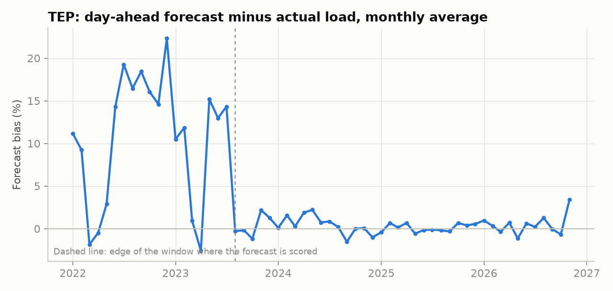
Before August 2023 the published forecast ran about 13% above actual demand in a typical month, then dropped to near zero and stayed there. That looks like a change in how the numbers are reported, so the forecast is scored from August 2023 on (see the notes at the end).
| Aug 2023 to Nov 2026 | Result |
|---|---|
| Average hourly miss (MAPE), with 95% range | 2.87% (2.68-3.09) |
| Average lean: positive means the forecast runs high | +0.26% (+0.02 to +0.54) |
| Average hourly miss by year: 2023 (Aug-Dec) / 2024 / 2025 / 2026 | 3.1% / 3.0% / 2.5% / 3.0% |
| Summer days where the forecast picks the exact peak hour / within one hour | 62% / 88% |
| Daily peak miss, weekdays vs weekends and holidays | -0.9% vs -0.4% |
The miss depends on the heat. On mild days the forecast is on target; from 90°F up it predicts too little.

| Daily high | Days | Forecast peak minus actual peak | 95% range | Days the forecast was 3%+ too low |
|---|---|---|---|---|
| Under 80°F | 420 | +0.2% | -0.4 to +0.5 | 10% |
| 80-90°F | 213 | -0.1% | -1.1 to +0.8 | 23% |
| 90-100°F | 288 | -1.7% | -2.3 to -1.2 | 35% |
| 100-105°F | 171 | -1.8% | -2.6 to -1.1 | 37% |
| 105-110°F | 83 | -1.3% | -2.1 to -0.6 | 21% |
| 110°F+ | 10 | -4.1% | -5.1 to -3.3 | 60% |
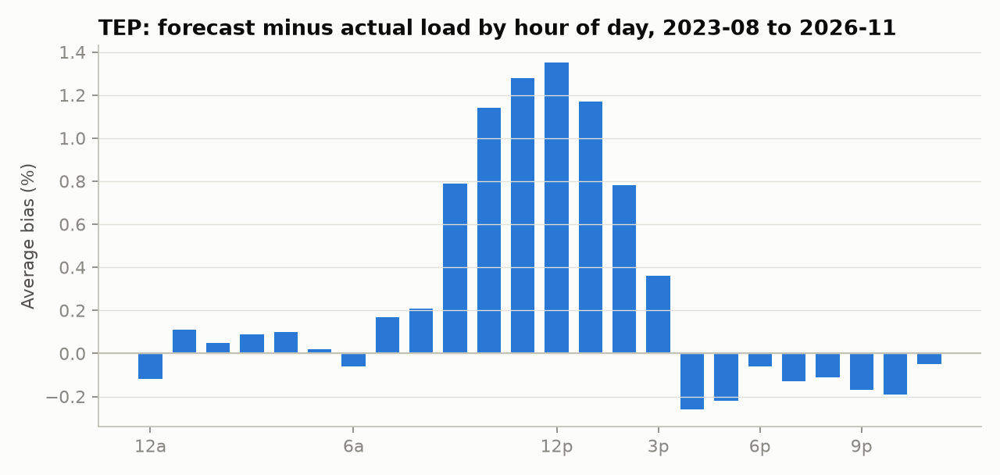
- A wrong weather forecast explains little of it. Using the public weather model's prediction for the same day, days that turned out 3°F+ hotter than forecast (44 days) missed the peak by -2.4%, days within 3°F (333) by -1.5%, and days 3°F+ cooler (50) by -0.6%. Even with the weather called correctly, hot days come in above forecast.
- The misses don't repeat from one day to the next. Today's miss has almost no relationship with the miss two days earlier (correlation 0.13), so adjusting today's forecast by recent misses barely helps: tested on Mar 2025-Nov 2026, it moves the average miss from 2.74% to 2.72%. What remains is how demand responds to heat.
3. Growth once weather is removed
A hot year uses more power than a mild one, so raw totals overstate or hide real growth. Weather-adjusted demand estimates what each year would have used under the same weather, so years can be compared fairly.
| 2022 | 2023 | 2024 | 2025 | 2026 (to Nov 2) | |
|---|---|---|---|---|---|
| Average demand, weather-adjusted (MW, July-type weekday) | 2,011 | 2,069 | 2,109 | 2,111 | 2,145 |
| Peak on a 110°F weekday, weather-adjusted (MW) | 3,094 | 3,133 | 3,176 | 3,187 | 3,255 |
| Actual highest demand of the year (MW) | 3,019 | 3,419 | 3,319 | 3,448 | 3,416 |
- 2024 to 2026: average demand +1.7%, peak on a 110°F day +2.5%. The 2022-2023 figures straddle the August 2023 reporting change, so the clean comparison starts in 2024.
- TEP's electricity sales to its own customers grew 1.4% from 2022 to 2025 (residential +1.0%, commercial +2.7%, industrial +1.2%) while its customer count grew 3.1%. Those sales were 62% of the energy used in TEP's grid area in 2025; the area also serves other utilities' customers.
4. Solar and the evening ramp
During the day, large solar farms supply part of the power people use. In the evening, solar output falls while homes and businesses still need power, so other sources (gas and coal plants, batteries, power from outside the area) must ramp up fast. The demand left after solar and wind is called net load, and its rise as the sun sets is the evening ramp.

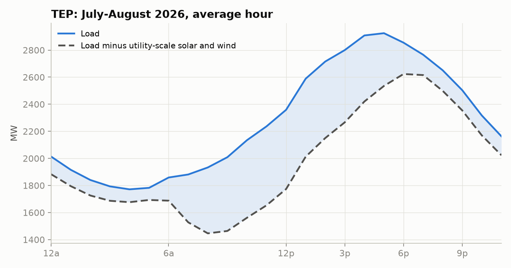
| 2022 | 2023 | 2024 | 2025 | 2026 (to Nov 2) | |
|---|---|---|---|---|---|
| Average output of large solar farms (MW) | 122 | 117 | 112 | 113 | 198 |
| Share of demand met by large solar farms, 11 AM-2 PM | 22% | 20% | 19% | 20% | 31% |
| Average daily largest 3-hour rise in net load (MW) | 517 | 541 | 531 | 530 | 644 |
| The same rise on the hardest 5% of days (MW) | 734 | 786 | 687 | 687 | 868 |
| Average time of the net-load peak, summer | 4:51 PM | 5:38 PM | 5:08 PM | 5:29 PM | 6:10 PM |
Rooftop solar is invisible in this data: it lowers measured demand before the grid sees it, so the real ramp is larger than shown. In July-August 2026, net load bottomed at 1,446 MW at 8 AM and peaked at 2,623 MW at 6 PM.
5. What supplies the peak
| 100 highest-demand hours of the year | 2024 | 2025 | 2026 (to Nov 2) |
|---|---|---|---|
| Demand (MW) | 3,035 | 3,145 | 3,184 |
| Gas / coal (MW) | 1,534 / 579 | 1,388 / 640 | 1,361 / 567 |
| Solar / wind (MW) | 195 / 104 | 172 / 118 | 289 / 103 |
| Battery (MW; reported from Jan 2025) | not reported | 110 | 267 |
| Power flowing in from outside the area (MW, share of demand) | 616 (20%) | 717 (23%) | 597 (19%) |
About a fifth of the power at peak arrives from outside TEP's grid area. That figure is physical flow, so it includes output from distant plants TEP owns or contracts, not only power bought on the market.
6. Reliability
| Per customer, per year (EIA-861) | 2023 | 2024 | 2025 |
|---|---|---|---|
| Minutes without power, normal days (major storms excluded) | 61.9 | 68.4 | 41.8 |
| Minutes without power, all days | 168.7 | 113.2 | 41.8 |
| Minutes added by major events | 106.8 | 44.8 | 0 |
| Number of outages, all days | 0.98 | 0.99 | 0.65 |
| Average outage length, all days (minutes) | 173 | 114 | 65 |
What this means
- Hot afternoons carry the forecasting risk. The forecast is reliable on mild days and runs about 2% low from 90°F up, with the right weather in hand, and 4% low on the rare 110°F days. Demand keeps climbing about 61 MW per degree in the heat. That pattern is what a utility would check first when it plans how much reserve power to hold.
- Solar is shifting the hard hours later. Midday demand comes in below forecast and late afternoon above it, and the net-load peak moved from about 5 PM to 6 PM as solar farm output jumped. Battery output in the top hours rose from 110 to 267 MW in a year, which is the tool built for exactly that shift.
- Growth is not the pressure in Tucson. Timing is. With demand nearly flat, the cost question is meeting the same peak at a later, steeper hour rather than adding capacity for growth.
- Outages come from storms. Normal-day outage time is low; the bad years, 2023 and 2024, came from major events. The companion outage study prices that risk.
What public data can't answer: how TEP's own load model treats extreme heat and rooftop solar, and how much of the 6 PM peak its batteries are planned to cover.
How the numbers were made
- Scope. The hourly figures cover TEP's whole grid area, which is wider than TEP's own customers (62% of 2025 energy). Sales and reliability figures are for TEP itself.
- Reporting change. The biggest single shift in the monthly forecast lean falls in March 2023 (11.8% before, 1.2% after), but the lean returned to 13-15% from May to July 2023 and stayed near zero from August 2023, when in-area gas output also doubled. Scoring starts in August 2023.
- Data checks (42,408 hours). No duplicate or missing hours; 120 hours without a forecast; 74 hours where EIA filled in demand itself; 269 hours where the forecast equals actual demand and 196 where it equals the prior day's (all kept); demand matches generation minus net flow within 2% in all but 5 hours.
- Methods. Hot days are chosen by temperature. Ranges come from resampling 14-day blocks of days, since misses cluster, and heat-wave ranges resample whole events. Growth comes from a model of daily demand on heating and cooling need, weekday and holiday, with a separate level for each year. The weather check uses the archived public forecast model; TEP's own weather forecast is not public.
- Reproduce.
python pull.py && python analysis.py; every number is inresults.jsonunderTEP.
Arizona's Three Large Grids: TEP, APS and SRP Side by Side
Jake Moore · November 2026 · Public data only: EIA-930 hourly grid data (Jan 2022 to Nov 2, 2026), EIA-861 annual sales and reliability (2019-2025), Open-Meteo weather for Tucson and Phoenix. Detailed memos: TEP, APS, SRP.
Bottom line
- Same heat, different growth. All three grid areas respond to heat the same way: peak demand rises about 2% for every degree above 80-84°F. But underlying growth differs widely. After accounting for weather, demand since 2024 grew 10.8% in the APS area (through Nov 2026), 2.6% in the SRP area (through 2025) and 1.7% in the TEP area (through Nov 2026).
- Everyone needs power at the same time. All three usually hit their summer high between 5 and 6 PM, and their daily peaks move closely together. A statewide heat wave tightens every system in the same hour.
- Forecasting skill is close. Over the period all three can be compared on, TEP and SRP predicted hourly demand within about 3% on average, APS within about 4%. Since February 2025, APS's forecast and its reported demand have split apart by 450-700 MW overnight, for reasons the public data doesn't show.
- Solar is changing when other power is needed, fastest in the APS area. As solar output falls in the evening, batteries, power plants and imports must make up the difference. In the APS area that average three-hour climb has doubled since 2022 to 2,104 MW; TEP's is 644 MW and SRP's 1,002 MW.
Key terms
| Term | What it means here |
|---|---|
| Load, demand | How much electricity is being used at a given moment |
| Peak | The highest demand in a period, usually one hour of a summer afternoon |
| Megawatt (MW) | Power being used or produced at one moment. 1 MW = 1,000 kilowatts |
| Balancing area | A section of the grid where one operator keeps supply and demand matched. It can include more than one utility's customers and plants |
| Day-ahead forecast | The utility's published prediction of demand for each hour of the next day |
| MAPE | The average size of the hourly forecast miss, in percent |
| Weather-adjusted demand | What a year would have used under the same weather, so years compare fairly |
| Net load | Demand minus output from large solar and wind farms: what other sources must supply |
| Evening ramp | The fast rise in net load as solar output falls toward sunset |
Side by side
| Measure | TEP | APS | SRP |
|---|---|---|---|
| Customers, 2025 | 0.46 million | 1.43 million | 1.19 million |
| Temperature where demand starts climbing steeply | 82°F | 84°F | 80.5°F |
| Added peak per °F above it (MW / % of hot-day peak) | 61 / 2.2% | 139 / 2.0% | 137 / 2.0% |
| Added peak per °F of overnight low, summer (MW) | 12 | 10 | 28 |
| Third day or later of a heat wave, beyond that day's weather (MW; events) | +29 (5) | +122 (9) | +118 (6) |
| Weather-adjusted average demand, 2024 to latest | +1.7% (to Nov 2026) | +10.8% (to Nov 2026) | +2.6% (to 2025) |
| Weather-adjusted average demand, 2022 to 2025 | +5.0%, across TEP's 2023 reporting change | +16.0% | +8.8% |
| Utility's own sales 2022-2025 (2024-2025) | +1.4% (-0.3%) | +12.0% (+1.5%) | +10.1% (+2.4%) |
| Overnight low as % of peak hour, July-August 2025 | 59.5% | 66.5% | 58.6% |
| Average hourly forecast miss, Aug 2023-Jan 2025 (95% range) | 3.02% (2.67-3.47) | 3.98% (3.71-4.22) | 2.93% (2.72-3.15) |
| Average hourly forecast miss, each utility's own clean window | 2.87% (Aug 2023-Nov 2026) | 3.82% (2022-Jan 2025) | 3.16% (2022-Feb 2026) |
| Share of midday demand met by large solar farms, latest summer | 31% (2026) | 42% (2026) | 21% (2025) |
| Average daily 3-hour evening ramp, latest year | 644 MW (2026) | 2,104 MW (2026) | 1,002 MW (2025) |
| Ramp as % of the year's highest demand | 19% | 23% | 11% |
| Battery output in the 100 highest-demand hours, latest year | 267 MW | 1,030 MW | 205 MW |
| Power flow at the 100 highest-demand hours, latest year | 19% of demand flows in | 33% flows in | 32% flows out |
| Minutes without power per customer, normal days, 2025 | 41.8 | 73.1 | 49.9 |
Heat-wave figures rest on 5-9 events each, so treat them as suggestive.
1. Growth
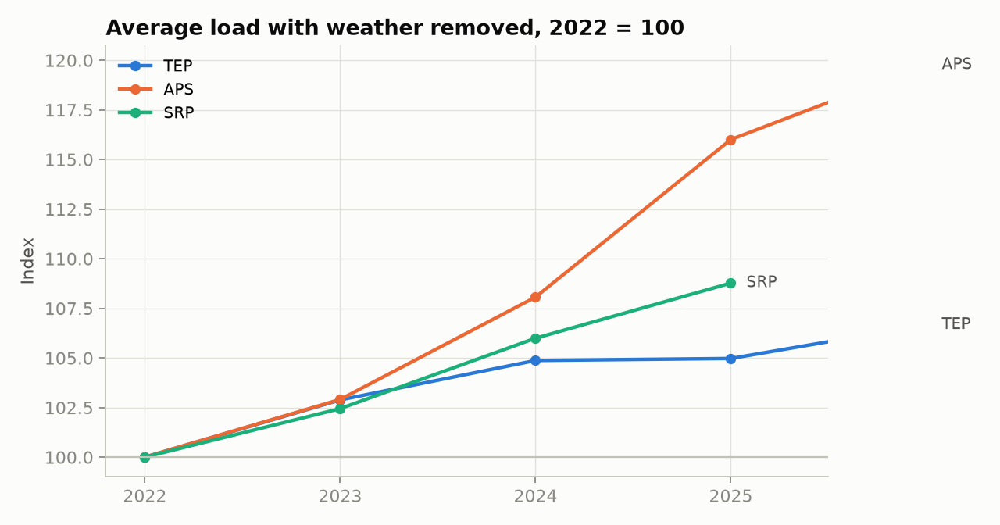
The APS area's growth through 2024 tracked APS's own sales, led by commercial customers. In 2025 the area added about 337 MW of average demand while APS's sales rose 1.5%, so most of that year's jump is either power used in the area by others, or a change in what the reported demand covers. Demand in the APS area stays at two-thirds of its peak overnight, seven points above TEP and SRP. SRP's growth comes from businesses, with industrial (+15.2%) as well as commercial (+18.6%) sales rising from 2022 to 2025. TEP's own sales are flat.
2. Heat
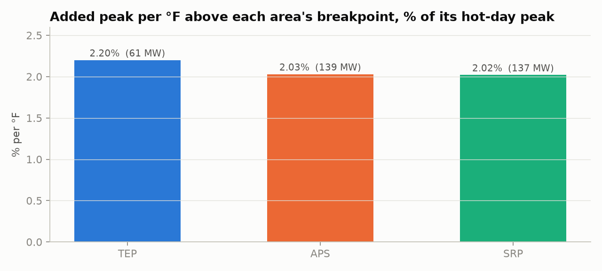
Scaled to their size, the three respond to daytime heat almost identically. They differ at night: per degree, Phoenix's overnight lows matter almost three times as much for SRP as for APS.
3. Forecasting
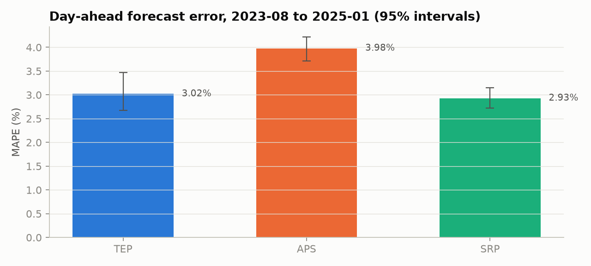
| Day-by-day difference in forecast miss, Aug 2023-Jan 2025 | Average (percentage points) | 95% range |
|---|---|---|
| TEP minus SRP | +0.09 | -0.35 to +0.65 (no measurable difference) |
| TEP minus APS | -0.96 | -1.40 to -0.45 |
| SRP minus APS | -1.05 | -1.30 to -0.76 |
Each forecast misses in its own way. TEP's is on target overall and runs low only on hot afternoons. SRP's runs about 1.5% low in every hour of every month, and its miss has grown each year. APS's ran about 4% low at 9 AM and 4% high at 4 PM before 2025, and since February 2025 it sits well below reported demand overnight.
4. The shared peak hour
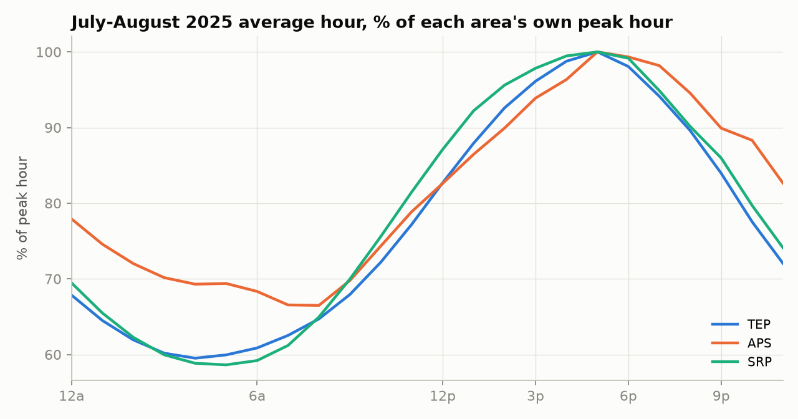
- Of each area's 20 highest-demand days since 2022, TEP and SRP share 8, SRP and APS 7, TEP and APS 5, and all three share 3.
- Summer daily peaks move together (correlation 0.87 TEP-SRP, 0.83 TEP-APS, 0.90 SRP-APS), and all three average their peak in the 5-6 PM hour.
- At their own peaks, the TEP and APS areas draw power in from outside while the SRP area sends power out. These are physical flows, which include jointly owned and distant plants.
What this means
- Arizona's grids face the same heat but different futures. The APS area is growing about six times as fast as TEP's since 2024, and much of the newest growth runs around the clock. Planning for Phoenix and planning for Tucson are different problems.
- Shared peaks limit how much neighbors can help. When all three hit their high in the same hour on the same days, the power each area imports at peak competes with its neighbors' needs.
- The evening, not the afternoon, is becoming the hard hour. Solar keeps pushing the moment of greatest need for other power later and higher, most of all in the APS area, where the evening climb is now a quarter of the year's peak. Batteries supply about 1,000 MW at peak in the APS area, 270 MW at TEP and 200 MW at SRP.
- The public forecasts need care before use. Each has a reporting break, and APS's 2025 gap is unexplained. Anyone comparing utilities on public data has to pick clean windows first, as this analysis does.
How the numbers were made
- Grid-area figures (EIA-930) cover more than each utility's own customers: the utility's own sales were 62% of TEP's 2025 area energy, 88% of APS's and 94.5% of SRP's. Comparisons use each area in its own terms (percent of its own peak) instead of dividing by customers.
- Each forecast series has its own reporting break, so clean windows differ: TEP from August 2023, APS through January 2025, SRP through February 2026. The period all three share is August 2023 to January 2025.
- Weather is central Tucson for TEP and Phoenix Sky Harbor for APS and SRP. APS also serves Yuma and northern Arizona.
- Rooftop solar lowers measured demand before the grid sees it, so true evening ramps are larger than shown.
- Ranges come from resampling 14-day blocks of days, because forecast misses cluster; heat-wave ranges resample events.
- Reproduce with
python pull.py && python analysis.py; the comparison numbers are inresults.jsonunderarizona.
Arizona Public Service: Fast Growth, a 2025 Forecast Gap, and a Doubled Evening Ramp
Jake Moore · November 2026 · Public data only: EIA-930 hourly grid data for the area APS manages (Jan 2022 to Nov 2, 2026), EIA-861 annual sales and reliability (2019-2025), Open-Meteo weather for Phoenix Sky Harbor. Not prepared with, for, or using any information from APS. Companion memos: TEP, SRP, Arizona comparison.
Bottom line
- Demand is growing faster here than anywhere else in Arizona's three big grid areas. After accounting for weather, demand in the area APS manages rose 8.1% from 2022 to 2024, in line with APS's own sales, then another 7.3% in 2025 alone.
- The 2025 jump doesn't show up in APS's own sales. APS's electricity sales rose only 1.5% in 2025. Most of that year's increase is either power used in the area by customers other than APS's, or a change in what the reported demand figure covers.
- Something changed in February 2025. Overnight, reported demand jumped about 600 MW above the forecast in a single month and has stayed 450-700 MW above it since. Before the change the forecast missed by about 3.8% an hour on average; afterward, 9.9%. Public data does not say why.
- The evening ramp has doubled. Large solar farms now supply 42% of midday demand. As their output falls in the evening, other sources must replace it. The average daily three-hour climb in that remaining demand rose from 996 MW in 2022 to 2,104 MW in 2026, and it peaks near 7 PM.
1. Growth once weather is removed
APS reports to the federal grid data as a balancing area: a section of the grid where one operator keeps supply and demand matched every moment. The AZPS area includes APS's customers and some other users. Weather-adjusted demand estimates what each year would have used under the same weather, so years compare fairly.
| 2022 | 2023 | 2024 | 2025 | 2026 (to Nov 2) | |
|---|---|---|---|---|---|
| Average demand, weather-adjusted (MW, July-type weekday) | 4,711 | 4,848 | 5,091 | 5,465 | 5,642 |
| Peak on a 110°F weekday, weather-adjusted (MW) | 6,985 | 7,199 | 7,327 | 7,700 | 8,046 |
| Actual highest demand of the year (MW) | 8,531 | 9,854 | 9,020 | 10,529 | 9,071 |
| APS sales to its own customers (EIA-861) | 2022 to 2024 | 2024 to 2025 |
|---|---|---|
| Total | +10.4% | +1.5% |
| Commercial | +17.8% | +7.9% (about 144 MW on average) |
| Residential / industrial | +5.6% / -3.3% | -4.2% / -5.5% |
| Energy used in the whole AZPS area (EIA-930) | +12.4% | +7.9% |
Through 2024, area growth tracked APS's own sales. In 2025 the area added about 337 MW of average demand while APS's commercial sales added about 144 MW and its other customer classes fell. APS's own sales were 88% of the area's 2025 energy.
On a July-August 2025 day, the area's overnight low was still 66.5% of its peak hour, against 59-60% for TEP and SRP. A large share of demand in the AZPS area runs around the clock instead of rising and falling with the afternoon heat.
2. How heat drives the peak
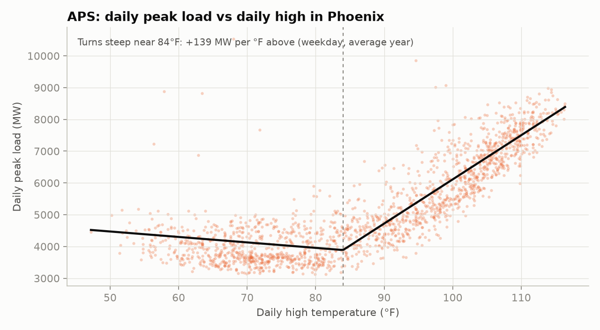
| Measure (year-to-year growth removed) | Result |
|---|---|
| Temperature where demand starts climbing steeply | 84°F (temperature explains 88% of the day-to-day swings in the peak) |
| Added peak for each °F above 84°F | +139 MW, 2.0% of an average hot summer-day peak (6,860 MW) |
| Summer days, one factor at a time: per °F of daily high / overnight low / dew point | +114 / +10 / +24 MW |
| Weekend or federal holiday, same weather | -54 MW |
| Third day or later of a heat wave (highs 111.7°F+), beyond that day's weather | +122 MW, from 9 heat waves (range +4 to +173) |
| Summer days peaking 5-6 PM / 6-7 PM | 57% / 24% |
| Hours within 5% of the year's highest demand, 2022-2025 / 2026 | 1-3 per year / 22 |
Long heat waves appear to build demand beyond each day's own temperature; nine events are too few to call it settled. APS's record peaks are very brief: until 2026, only 1 to 3 hours a year came within 5% of the annual high.
3. The day-ahead forecast
The day-ahead forecast is the utility's published prediction of demand for each hour of the next day. Its accuracy is measured as the average size of the hourly miss (MAPE). Because of the February 2025 change, it is scored in two parts.
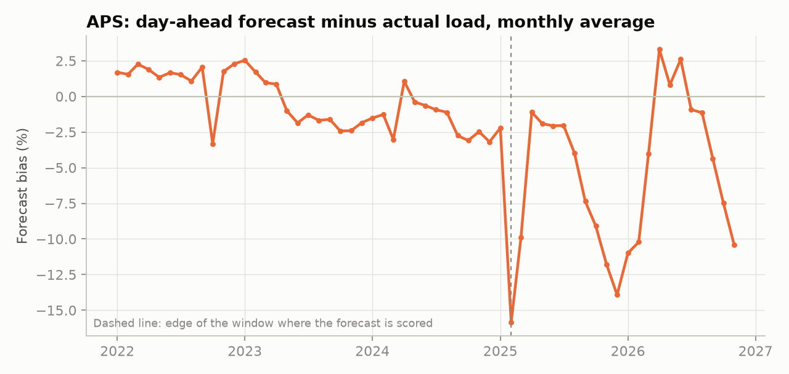
January 2022 to January 2025, before the change
| Result | |
|---|---|
| Average hourly miss (MAPE), with 95% range | 3.82% (3.60-4.01) |
| Average lean: negative means the forecast runs low | -0.38% (-0.84 to +0.07) |
| Average hourly miss by year: 2022 / 2023 / 2024 | 3.7% / 3.5% / 4.1% |
| Daily peak miss by temperature | within ±0.3% in every band, from under 80°F to 110°F+ |
| Summer days where the forecast picks the exact peak hour / within one hour | 56% / 90% |
| Shape through the day | about 3.8% low at 9 AM and 3.9% high at 4 PM |
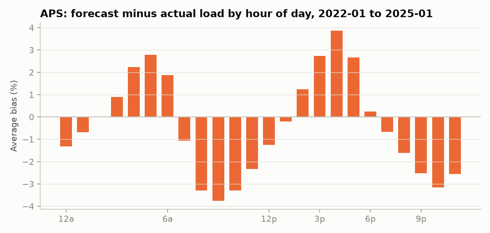
The low-morning, high-afternoon shape fits solar timing: measured demand falls later in the morning and recovers earlier in the afternoon than the forecast expects.
February 2025 to November 2026, after the change (forecast against reported demand)
| Result | |
|---|---|
| Average hourly miss / average lean | 9.9% (9.1-10.6) / -5.3% (-6.7 to -3.6) |
| Lean by hour | -11% to -15% from 9 PM to 3 AM; +5.5% at 4 PM |
| Daily peak miss: under 80°F / 100°F+ days | -8.7% / +2.5% to +3.1% |
| Exact peak hour / within one hour, summer | 13% / 68% |
| How closely today's miss matches the miss two days earlier (correlation) | 0.79 |
| Adjusting by recent misses, set on Feb-Dec 2025 and tested on Dec 2025-Nov 2026 | average miss 9.30% to 7.64% |
The gap behaves like a steady block of demand that appears in reported demand but not in the forecast: largest at night and in cooler months, partly offset in summer afternoons when the forecast runs high. Because it persists day to day, simply adjusting each forecast by recent misses removes about a fifth of the error.
4. Solar and the evening ramp
During the day, large solar farms supply part of the power people use. In the evening their output falls while demand stays high, so gas plants, batteries and imports must ramp up fast. The demand left after solar and wind is called net load, and its climb at sunset is the evening ramp.
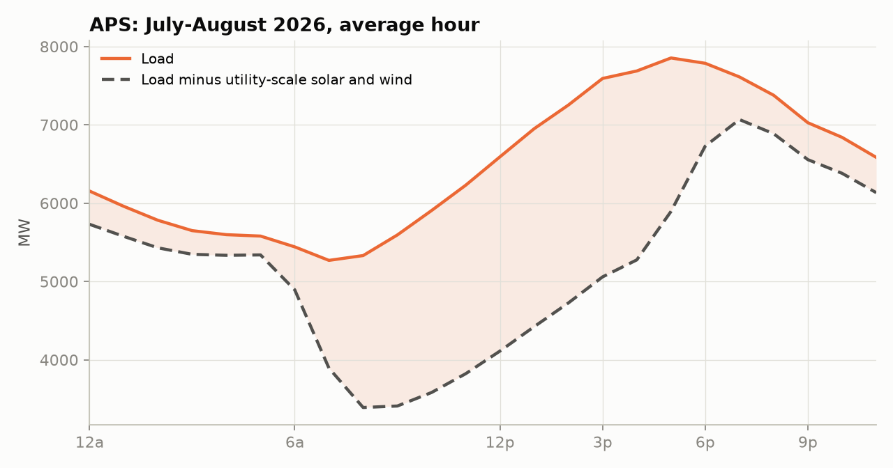
| 2022 | 2023 | 2024 | 2025 | 2026 (to Nov 2) | |
|---|---|---|---|---|---|
| Average output of large solar farms (MW) | 187 | 197 | 340 | 590 | 791 |
| Share of demand met by large solar farms, 11 AM-2 PM | 13% | 13% | 22% | 35% | 42% |
| Average daily largest 3-hour rise in net load (MW) | 996 | 1,087 | 1,237 | 1,771 | 2,104 |
| The same rise on the hardest 5% of days (MW) | 1,264 | 1,374 | 1,640 | 2,256 | 3,078 |
| Average time of the net-load peak, summer | 5:34 PM | 5:57 PM | 6:27 PM | 6:34 PM | 6:35 PM |
In July-August 2026, net load fell to 3,391 MW at 8 AM and climbed to 7,067 MW at 7 PM: a 3,700 MW swing every summer day, before counting rooftop solar, which lowers measured demand before the grid sees it.
5. What supplies the peak
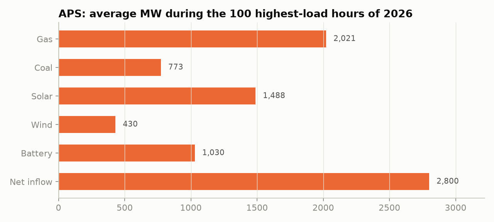
| 100 highest-demand hours of the year | 2023 | 2024 | 2025 | 2026 (to Nov 2) |
|---|---|---|---|---|
| Demand (MW) | 7,925 | 7,818 | 7,922 | 8,483 |
| Gas / coal (MW) | 2,433 / 1,188 | 1,904 / 1,184 | 1,945 / 1,033 | 2,021 / 773 |
| Solar / wind (MW) | 406 / 178 | 600 / 197 | 1,003 / 232 | 1,488 / 430 |
| Battery (MW; reported from Mar 2025) | not reported | not reported | 926 | 1,030 |
| Power flowing in from outside the area (MW, share of demand) | 3,627 (46%) | 3,560 (46%) | 2,782 (35%) | 2,800 (33%) |
Coal at the peak fell by a third since 2023 while solar nearly quadrupled and batteries passed 1,000 MW. The area still draws a third of its peak power from outside its boundary; that includes APS's own distant plants as well as purchases.
6. Reliability
| Per customer, per year (EIA-861) | 2019 | 2022 | 2023 | 2024 | 2025 |
|---|---|---|---|---|---|
| Minutes without power, normal days (major storms excluded) | 86.8 | 84.0 | 82.1 | 80.9 | 73.1 |
| Minutes without power, all days | 118.6 | 138.1 | 98.6 | 87.2 | 73.1 |
| Average outage length, all days (minutes) | 124 | 133 | 112 | 94 | 87 |
Normal-day outage time has improved every year since 2021 and is down 16% from 2019.
What this means
- Growth is the story, and part of it sits outside APS's own customers. Through 2024 the area grew with APS's commercial sales. In 2025 the area added about 337 MW of average demand that APS's sales account for only about 144 MW of, with a flat, around-the-clock profile.
- The February 2025 gap makes the public forecast hard to use. A steady 450-700 MW overnight difference between forecast and reported demand means anyone using these public figures for planning or analysis needs to know which number to trust. Because the gap repeats day to day, adjusting by recent misses already cuts the error by a fifth.
- The evening is now the hardest stretch of the day. The average three-hour climb at sunset doubled to about 2,100 MW, and on the hardest days passes 3,000 MW. Batteries supply about 1,000 MW at peak, the fastest-growing tool for covering it.
- Reliability keeps improving on normal days, year after year.
What public data can't answer: what caused the February 2025 step, whether that demand is in APS's own planning forecast, and how the 7 PM ramp is covered on the hardest days.
How the numbers were made
- Scope. AZPS is a balancing area; APS's own sales were 88% of its 2025 energy. APS also serves Yuma, Flagstaff and Prescott; this analysis uses Phoenix weather, where most of the demand is.
- Windows. The forecast is scored like-for-like through January 2025; the single largest shift in the monthly forecast lean falls in February 2025 (-0.4% before, -5.5% after). Later months are reported separately above.
- Data checks (42,408 hours). No duplicate or missing hours, no missing forecasts, 18 hours where EIA filled in demand itself, 33 hours where demand and generation minus net flow differ by more than 2%.
- Ranges come from resampling 14-day blocks of days, since misses cluster; heat-wave ranges resample whole events.
- Reproduce.
python pull.py && python analysis.py; every number is inresults.jsonunderAPS.
Salt River Project: Business-Led Growth, a Forecast That Runs Low, and a 2026 Reporting Change
Jake Moore · November 2026 · Public data only: EIA-930 hourly grid data for the area SRP manages (Jan 2022 to Nov 2, 2026), EIA-861 annual sales and reliability (2019-2025), Open-Meteo weather for Phoenix Sky Harbor. Not prepared with, for, or using any information from SRP. Companion memos: TEP, APS, Arizona comparison.
Bottom line
- Business growth is driving demand. After accounting for weather, average demand rose 8.8% from 2022 to 2025. SRP's sales to commercial customers grew 18.6% and to industrial customers 15.2%, while residential sales grew 1.4%.
- The forecast is accurate but consistently predicts too little. From January 2022 to February 2026, SRP's day-ahead predictions of hourly demand were off by about 3.2% on average and came in about 1.5% low in every hour of every month. The miss has grown each year, and it is largest in extreme heat: on 110°F+ days the forecast peak runs 3.0% low, and half of those days come in more than 3% above forecast.
- Hot nights matter more at SRP. Overnight temperature has a stronger effect on peak demand at SRP than at the other two Arizona utilities. On hot days, electricity use stays high after the sun goes down.
- Reliability is strong. On normal days (major storms excluded), SRP customers averaged roughly 41-53 minutes without power a year from 2019 to 2025, the lowest of the three utilities in most years.
- A change in reported demand clouds 2026. From March 2026, the forecast sits 340-580 MW above reported demand in every hour of the day. A flat gap across all 24 hours points to a change in what the demand figure covers, so those months are left out of the forecast scoring and growth figures.
1. Growth once weather is removed
A hot year uses more power than a mild one. Weather-adjusted demand estimates what each year would have used under the same weather, so years compare fairly.
| 2022 | 2023 | 2024 | 2025 | |
|---|---|---|---|---|
| Average demand, weather-adjusted (MW, July-type weekday) | 4,822 | 4,940 | 5,111 | 5,245 |
| Peak on a 110°F weekday, weather-adjusted (MW) | 7,162 | 7,305 | 7,437 | 7,654 |
| Actual highest demand of the year (MW) | 7,629 | 9,283 | 8,356 | 8,784 |
| SRP sales to its own customers, 2022 to 2025 (EIA-861) | Change |
|---|---|
| Total | +10.1% |
| Commercial / residential / industrial | +18.6% / +1.4% / +15.2% |
| Customers | +6.2% (1.19 million in 2025) |
| Energy used in SRP's whole grid area (EIA-930) | +12.2% |
SRP's own sales were 94.5% of the energy used in its grid area in 2025, so the area figures track SRP's customers closely.
2. How heat drives the peak
Demand (the industry calls it load) tracks temperature. Above a breakpoint near 80°F, air conditioning takes over and every extra degree adds to the day's highest hour, the peak.
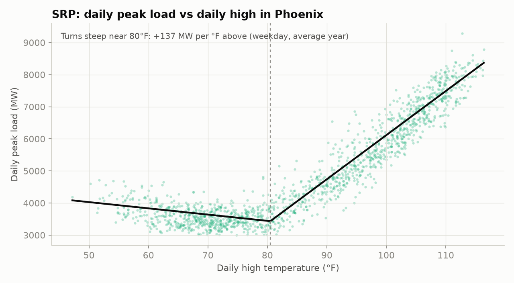
| Measure (Jan 2022 to Feb 2026, year-to-year growth removed) | Result |
|---|---|
| Temperature where demand starts climbing steeply | 80.5°F (temperature explains 95% of the day-to-day swings in the peak) |
| Added peak for each °F above it | +137 MW, 2.0% of an average hot summer-day peak (6,791 MW) |
| Summer days, one factor at a time: per °F of daily high / overnight low / dew point | +101 / +28 / +16 MW |
| Weekend or federal holiday, same weather | -64 MW |
| Added peak per °F, by year: 2022 / 2023 / 2024 / 2025 | 125 / 142 / 147 / 137 MW |
| Third day or later of a heat wave (111.7°F+), beyond that day's weather | +118 MW, from 6 heat waves (range +6 to +184) |
| Summer days peaking 4-5 PM / 5-6 PM | 33% / 43% |
Each degree of overnight low adds 28 MW at SRP, more than a quarter of the daytime effect and the most of the three utilities.
3. The day-ahead forecast
The day-ahead forecast is the utility's published prediction of demand for each hour of the next day. Accuracy is the average size of the hourly miss (MAPE).
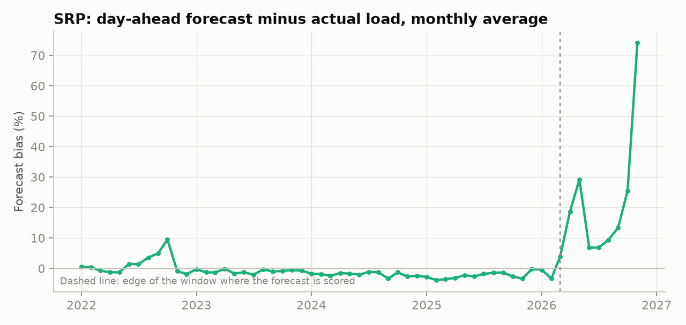
| Jan 2022 to Feb 2026 | Result |
|---|---|
| Average hourly miss (MAPE), with 95% range | 3.16% (2.99-3.37) |
| Average lean: negative means the forecast runs low | -1.51% (-1.79 to -1.22); low in every hour and every calendar month |
| Average hourly miss by year: 2022 / 2023 / 2024 / 2025 | 2.4% / 2.7% / 3.1% / 3.9% |
| Summer days where the forecast picks the exact peak hour / within one hour | 38% / 85% |
| Hours with no published forecast | 4,475 (11% of hours; daily peak scoring uses full days only) |
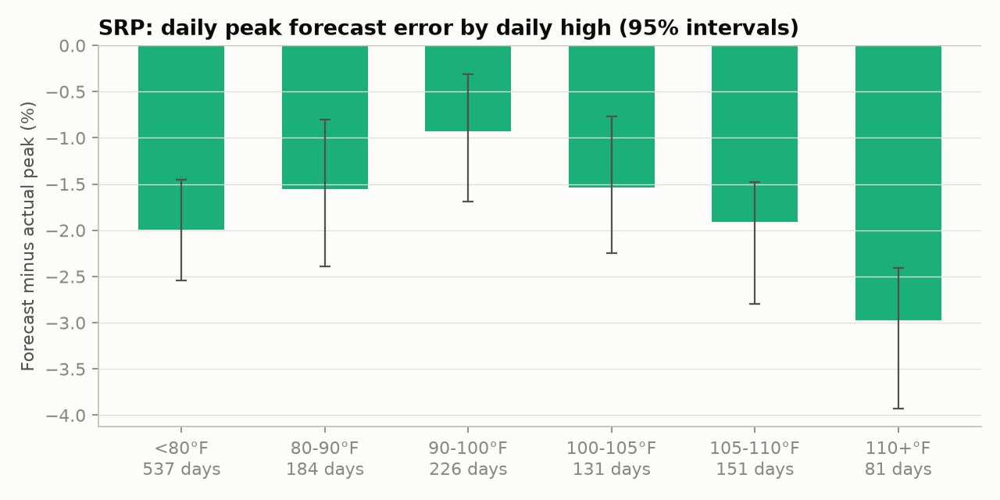
| Daily high | Days | Forecast peak minus actual peak | 95% range | Days the forecast was 3%+ too low |
|---|---|---|---|---|
| Under 80°F | 537 | -2.0% | -2.5 to -1.5 | 35% |
| 90-100°F | 226 | -0.9% | -1.7 to -0.3 | 27% |
| 100-105°F | 131 | -1.5% | -2.3 to -0.8 | 34% |
| 105-110°F | 151 | -1.9% | -2.8 to -1.5 | 39% |
| 110°F+ | 81 | -3.0% | -3.9 to -2.4 | 52% |
- The miss is growing. The average hourly miss rose every year, from 2.4% in 2022 to 3.9% in 2025, as demand grew about 3% a year.
- The low lean is steady. It is deepest at night (-2.7% at 11 PM) and smallest at midday (-0.8%).
- Misses partly repeat. Today's miss is moderately related to the miss two days earlier (correlation 0.48). Adjusting each forecast by recent misses, set on 2022-Feb 2024 and tested on Feb 2024-Feb 2026, cuts the average miss from 3.60% to 3.32%.
- A wrong weather forecast matters more here than elsewhere (correlation -0.28). On days 3°F+ cooler than the public weather forecast, the peak forecast runs 3.2% high; on days within 3°F it runs 2.0% low.
4. Solar and the evening ramp
As solar output falls in the evening, other sources must make up the difference. The demand left after solar and wind is called net load, and its climb at sunset is the evening ramp.
| 2022 | 2023 | 2024 | 2025 | |
|---|---|---|---|---|
| Average output of large solar farms (MW) | 129 | 177 | 385 | 414 |
| Share of demand met by large solar farms, 11 AM-2 PM | 8% | 11% | 20% | 21% |
| Average daily largest 3-hour rise in net load (MW) | 834 | 883 | 995 | 1,002 |
| The same rise on the hardest 5% of days (MW) | 1,313 | 1,419 | 1,460 | 1,479 |
| Average time of the net-load peak, summer | 4:48 PM | 5:25 PM | 5:47 PM | 5:20 PM |
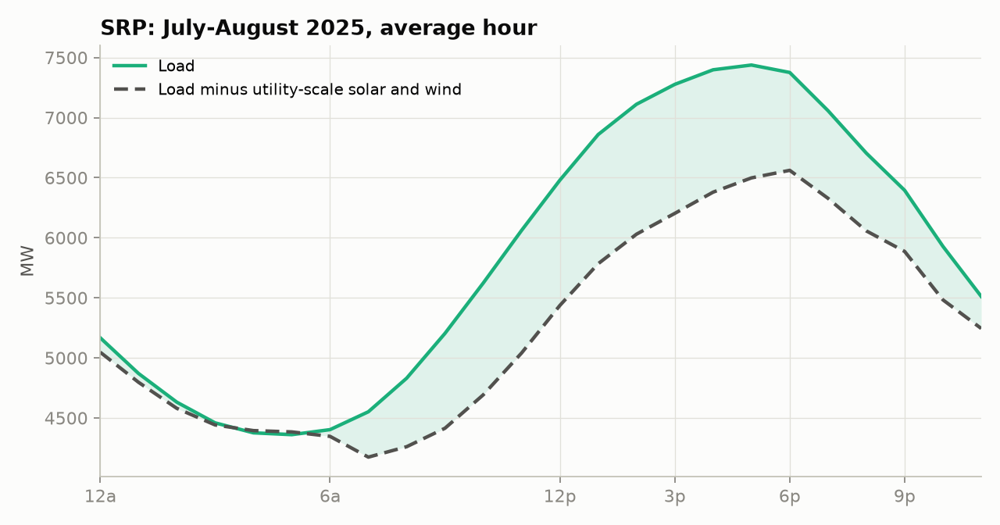
5. What supplies the peak
| 100 highest-demand hours of the year | 2023 | 2024 | 2025 |
|---|---|---|---|
| Demand (MW) | 7,972 | 7,887 | 8,146 |
| Gas / coal (MW) | 4,164 / 886 | 3,845 / 901 | 4,463 / 836 |
| Solar / hydro / wind (MW) | 421 / 172 / 20 | 829 / 141 / 96 | 863 / 121 / 138 |
| Battery (MW; reported from Mar 2025) | not reported | not reported | 205 |
| Power flowing out of the area (MW, share of demand) | 1,560 out (20%) | 2,072 out (26%) | 2,597 out (32%) |
At its own peak, SRP's grid area sends power out: generation inside it exceeds its demand by about a third. Part of that generation belongs to other utilities' shares of jointly owned plants.
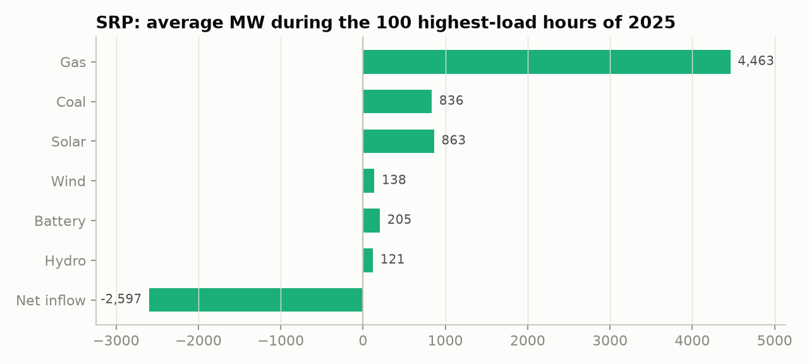
6. Reliability
| Per customer, per year (EIA-861) | 2019 | 2021 | 2022 | 2023 | 2024 | 2025 |
|---|---|---|---|---|---|---|
| Minutes without power, normal days (major storms excluded) | 43.3 | 47.9 | 49.9 | 49.2 | 52.8 | 49.9 |
| Minutes without power, all days | 49.3 | 85.1 | 81.4 | 70.0 | 58.0 | 65.7 |
| Average outage length, all days (minutes) | 63 | 84 | 75 | 69 | 61 | 65 |
What this means
- Growth comes from businesses, not households. Commercial and industrial sales grew 15-19% in three years while residential grew 1.4%. Nearly all of SRP's sales growth is business demand.
- A forecast that leans low every hour is the easiest kind to fix. A steady 1.5% shortfall can be corrected with a simple adjustment. The bigger concern is that the miss has grown every year and is largest on 110°F+ days, when an unexpected shortfall leaves the least room to spare.
- Hot nights are an SRP-specific risk. Overnight lows add 28 MW per degree, more than twice APS's or TEP's figure. A warm night keeps demand high into the evening, right when solar output is gone.
- Normal-day reliability is the best of the three utilities in most years.
What public data can't answer: what changed in SRP's reported demand in March 2026, and whether SRP's own forecast uses predicted overnight lows.
How the numbers were made
- Windows. Forecast scoring and growth run January 2022 to February 2026. The single largest shift in the monthly forecast lean falls in August 2026 (0.2% before, 30.6% after); the lean was already 18.7% in April and 29.2% in May
- From March 2026, actual minus forecast ranges from -578 to -342 MW across the 24 hours, against +27 to +192 MW before.
- Ranges come from resampling 14-day blocks of days, since misses cluster; heat-wave ranges resample whole events, and six events are too few to treat the heat-wave figure as settled.
- Data checks (42,408 hours). No duplicate or missing hours, 72 hours where EIA filled in demand itself. In 8,413 hours (20%), demand and generation minus net flow differ by more than 2%: SRP's flow and generation figures don't balance its demand as tightly as TEP's and APS's, so the flow figures above carry that caveat.
- Reproduce.
python pull.py && python analysis.py; every number is inresults.jsonunderSRP.